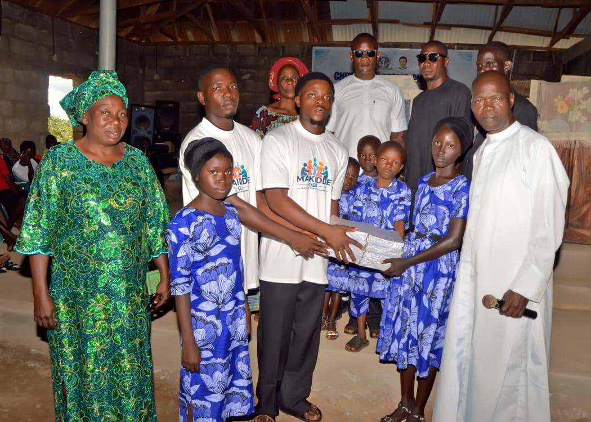
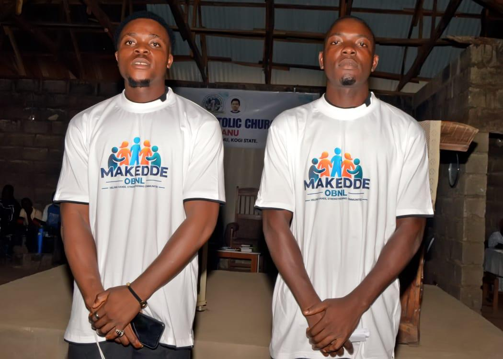
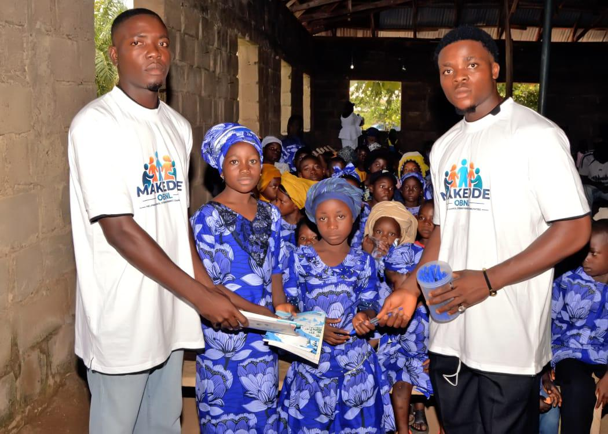
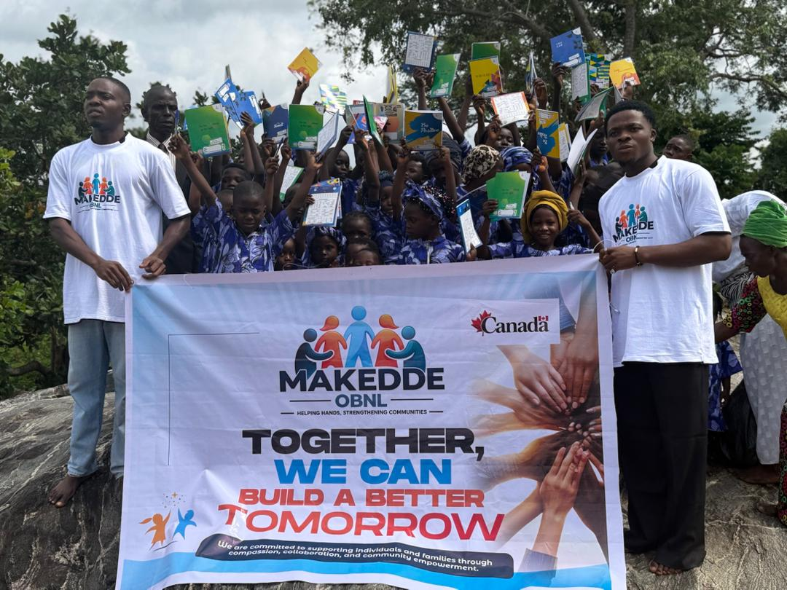
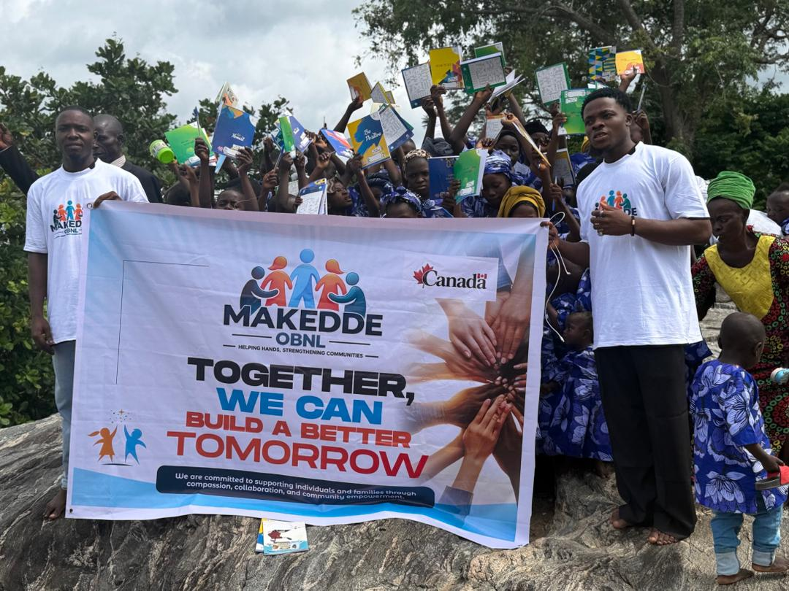

♥
HELP PEOPLE
Supporting vulnerable individuals and families with practical assistance and humanitarian action.
LEARN MORE →MAKEDDE OBNL
MAKEDDE OBNL works to improve the living conditions of vulnerable people through assistance, education, skills, community action and opportunity.

OUR IMPACT
Our work is built around practical support, learning, healthy communities and lasting opportunity.
Supporting vulnerable individuals and families with practical assistance and humanitarian action.
LEARN MORE →Promoting solidarity, mutual aid, education and activities that strengthen social unity.
LEARN MORE →Encouraging education, vocational learning, skills development and knowledge exchange.
LEARN MORE →Building partnerships with public, private, national and international organizations.
LEARN MORE →WHAT WE DO
MAKEDDE OBNL works across several areas that contribute to stronger, healthier and more self-reliant communities.
Providing assistance to vulnerable people, including orphans, widows, underprivileged individuals and people with disabilities.
Promoting education and vocational training, including tailoring, sewing, hairdressing, IT and computing skills.
Organizing knowledge and experience exchanges in health and education to help communities learn and thrive.
Developing sports, recreational, social and cultural activities that support health, education and social unity.
Protecting the environment through initiatives such as tree planting and community awareness.
Building partnerships with public, private, national and international organizations to expand positive impact.
HOW TO HELP
There are many ways you can stand with MAKEDDE and help us reach more people.
Every contribution helps us continue our work.
Join our growing team and give your time or skills.
Share our mission with friends, family and your community.


WHO WE ARE
MAKEDDE OBNL is a non-profit organization whose mission is to improve the living conditions of vulnerable people and strengthen communities through compassion, solidarity, education and practical support.
Our objectives include humanitarian assistance, vocational training, health and education initiatives, sports and recreation, environmental action and partnerships that help create lasting opportunities.
We believe stronger communities are built when people have access to support, knowledge, skills and opportunities to participate in a better future.
Connect with MAKEDDE →MAKEDDE IN NIGERIA
In Ekinrin Adde, Kogi State, Nigeria, MAKEDDE OBNL supported local children by providing school supplies to help with their education.

School Supply Distribution
Community Outreach — Kogi StateSTAY CONNECTED
We will share our latest projects, updates and stories here.
CONTACT
Have a question, want to volunteer, or want to partner with MAKEDDE?